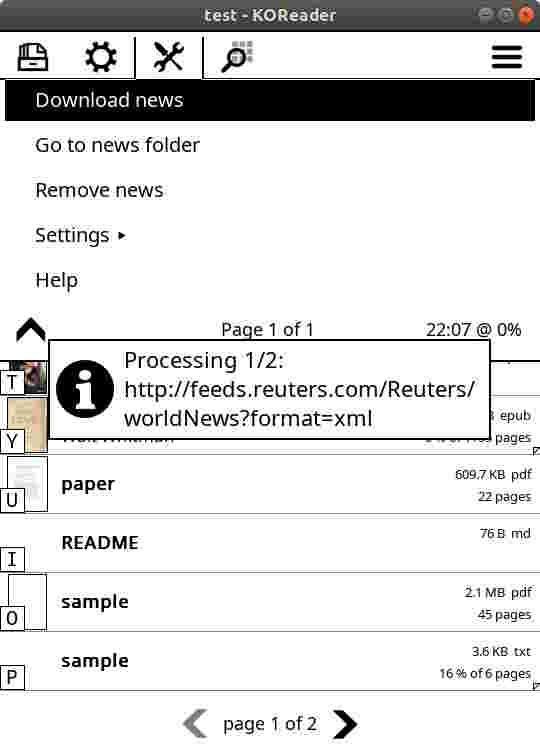
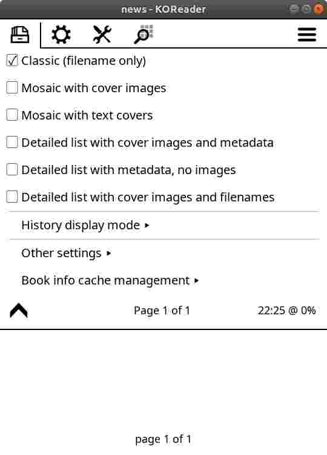

News (RSS/Atom) downloader lets you download and read you favorites websites articles directly from your e-book reader. It’s simple easily to use.
Most websites provides their articles (in addition to http protocol) using RSS /Atom. If you see this logo in your favorite website: you can be sure it uses RSS or Atom.
[For more information about RSS/Atom please refer to RSS wiki pages.]
All you need to do then is copy RSS/Atom url address and use it in News downloader configuration.
Press “Download news” to start downloading. Feed configuration can be changed in “Settings” menu.
If successful, once finished, it creates in News downloader directory subfolder for every feed provider.
This feature allows you to quickly go to news downloader working directory and view it content. (This directory can be changed in „Settings”. )
It the example above (initial sample configuration) created 2 directories for 2 feed providers. This example contains 2 articles that can be read by clicking on it. Name of the file usually (if contained in RSS/Atom) starts date in format:
yy-mm-dd_hh-mmHow many articles are downloaded per each feed provider can be changed in configuration.
Hint: for news downloader recommended „Display mode” is „Classic”:
News (RSS/Atom) downloader comes with initial, sample feeds configuration, that can be change under Settings menu.
Note: you can also edit this file in you favorite external text editor. But doing it here allows you to check you configuration before saving.
Please do NOT change lines marked with:
--do NOT change this line
Entry syntax:
{"http://your-url.com", limit=max_number_of_items_to_be_created, download_full_article=true/false},
Details:
Note: Remember to put coma at the end of each entry!
Allows you to select folder where you want to store you downloaded news. To select folder press down and hold for 1 second. Then confirm:
Once selected “Go to news folder” is updated.